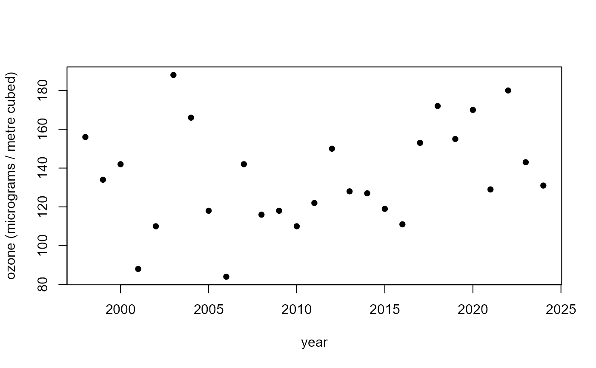
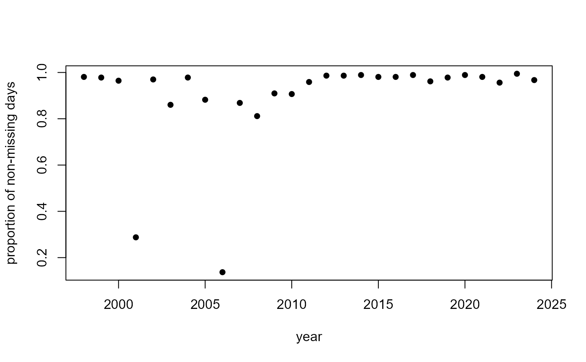
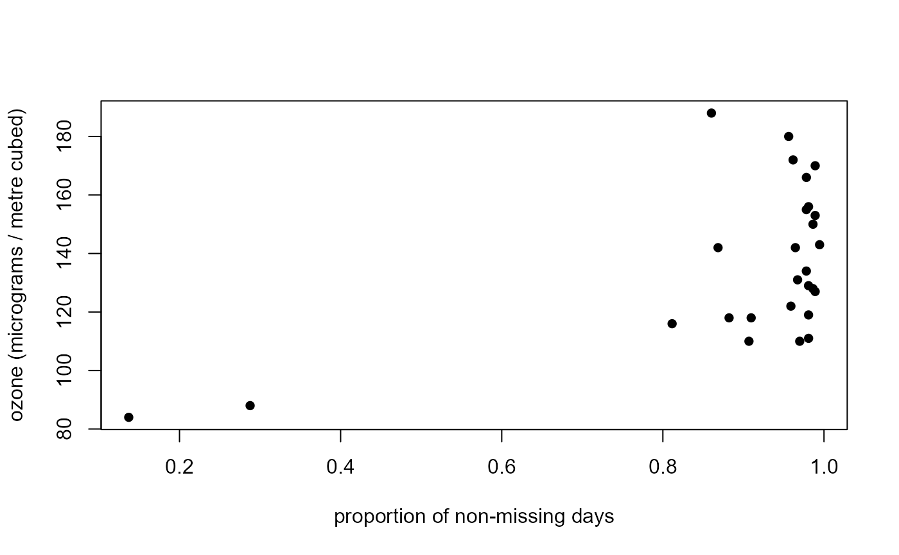

Annual maxima of daily maximum ozone levels at Plymouth in Devon (UK) for the years 1998-2024 inclusive.
Format
PlymouthOzoneMaxima is a data frame with 27 rows (years 1998 to
2024) and the 4 variables:
maxima: annual maximum ozone level in \(\mu\)g/m\(^3\).notNA: the number of days of the year for which raw data were available.n: the number of days in the year (365 or 366).block: a block number of 1 for year 1998 through to 27 for year 2024.
The row names of PlymouthOzoneMaxima are the years 1998:2024.
The raw data are missing for approximately \(10\%\) of the days.
Source
The Department for Environment Food and Rural Affair (DEFRA). The Plymouth Centre monitoring site at the UK-AIR database Data Selector.
See also
PlymouthOzone for the raw time series.
Examples
head(PlymouthOzoneMaxima)
#> maxima notNA n block
#> 1998 156 358 365 1
#> 1999 134 357 365 2
#> 2000 142 353 366 3
#> 2001 88 105 365 4
#> 2002 110 354 365 5
#> 2003 188 314 365 6
# Time series plot of annual maxima ozone levels
plot(rownames(PlymouthOzoneMaxima), PlymouthOzoneMaxima$maxima,
ylab = "ozone (micrograms / metre cubed)", xlab = "year", pch = 16)

# Time series plot of proportion of non-missing days
plot(rownames(PlymouthOzoneMaxima),
PlymouthOzoneMaxima$notNA / PlymouthOzoneMaxima$n,
ylab = "proportion of non-missing days", xlab = "year", pch = 16)

# Plot ozone levels against the proportion of non-missing days
plot(PlymouthOzoneMaxima$notNA / PlymouthOzoneMaxima$n,
PlymouthOzoneMaxima$maxima,
ylab = "ozone (micrograms / metre cubed)",
xlab = "proportion of non-missing days", pch = 16)
